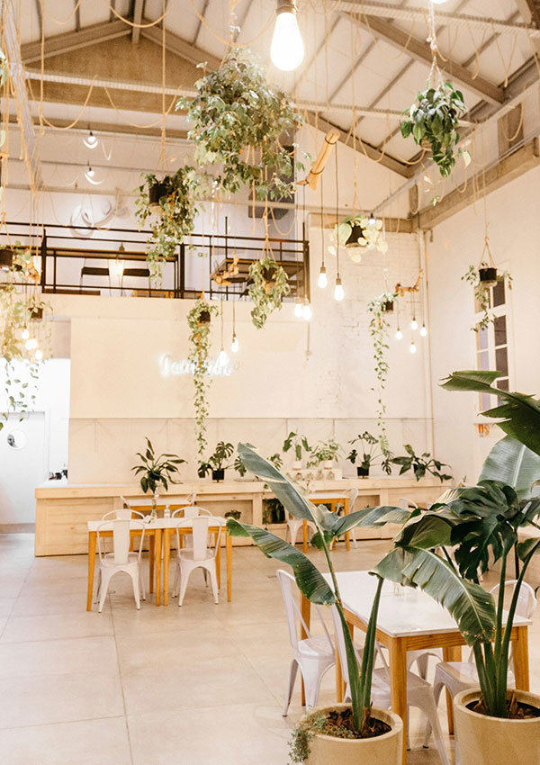
CONCEPT
畑から生まれる、
おいしさ
HATAKE CAFEは、国産大豆と旬の野菜を中心にした「植物性の食事」を提供するカフェです。
お肉を使わなくても、豊かで満足感のある食体験を届けることを信条としています。
シェフ・田中絵里子は幼少期を農家で過ごし、土と食材の関係に深い敬意を抱いてきました。
「畑から食卓へ」——その一本の線を大切にした料理は、地元農家と連携した食材調達からはじまります。
環境への配慮は調理だけにとどまりません。
容器・パッケージから店舗の内装まで、できるかぎり持続可能な素材を選んでいます。
NEW PRODUCT
新商品
はたけバーガー
国産大豆100%のパティに、
京都・丹波産有機アボカドのソースを合わせた渾身の新作。
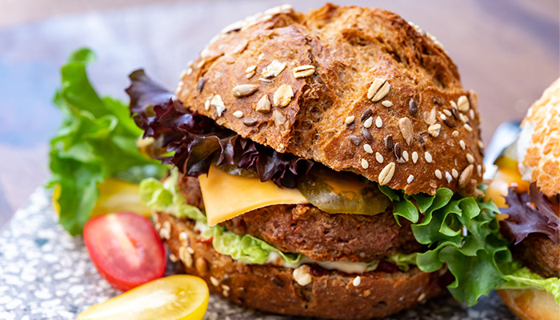
大豆の粗挽きパティは、肉厚でジューシー。グリルすることで表面に香ばしい焦げ目をつけ、植物性とは思えない食べ応えを実現しました。自家製アボカドソースとともに、全粒粉バンズではさんでどうぞ。
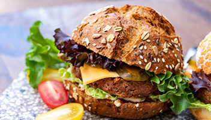
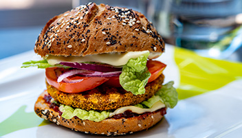
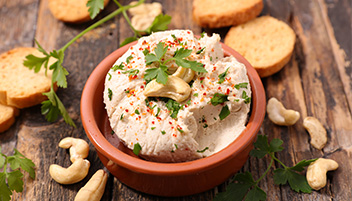
¥1,280税込/セット+¥350
ギャラリー
GALLERY
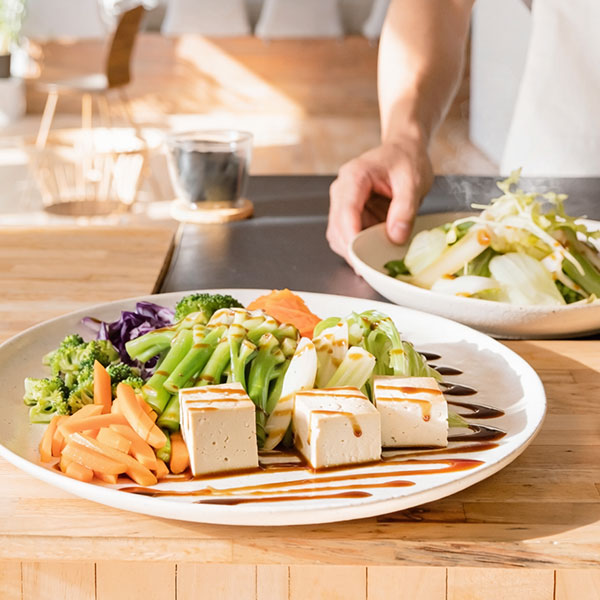
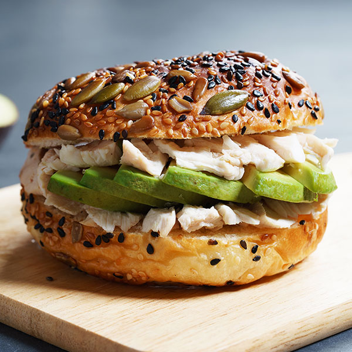
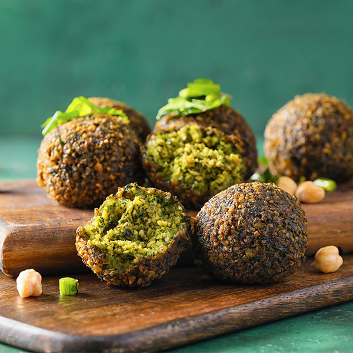
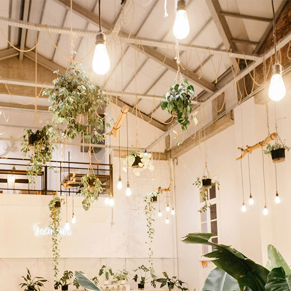
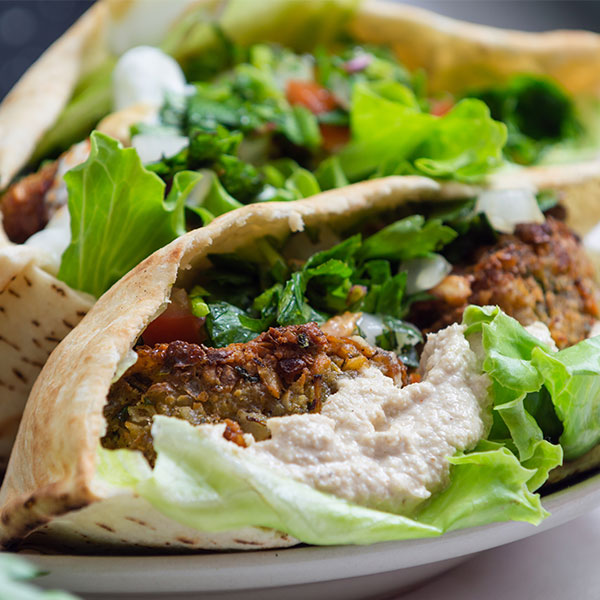
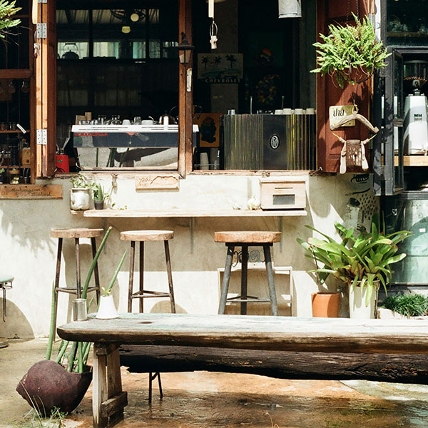
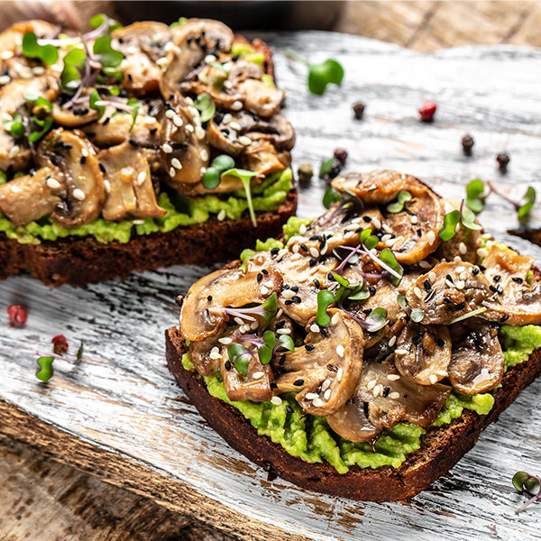
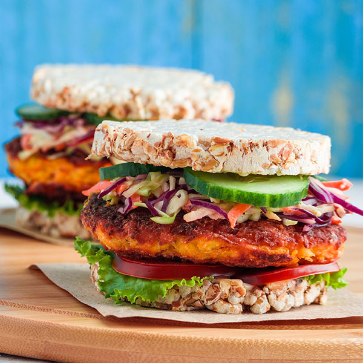
FAQ
よくある質問
- Q. 大豆アレルギーがあっても食べられますか？
- A. 申し訳ございませんが、当カフェのメニューの多くに大豆・大豆加工品が使用されております。アレルギーをお持ちの方は、ご注文前にスタッフまでお申し付けください。
- Q. お肉は本当に一切使っていないのですか？
- A. はい、すべてのメニューでお肉・魚は使用しておりません。詳しいアレルゲン情報は店舗にてご確認いただけます。
- Q. テイクアウトはできますか？
- A. 一部メニューを除き、テイクアウト可能です。
- Q. 予約はできますか？
- A. 4名様以上のご利用から、お電話にて承っております。
- Q. 駐車場はありますか？
- A. 店舗専用の駐車場はございません。近隣のコインパーキングをご利用ください。自転車スタンドは店舗前に4台分ご用意しております。
SHOP INFO
店舗情報
ADDRESS
〒150-0001
東京都渋谷区神宮前3-12-8 HATAKEビル 1F
| 月〜金 | 8:00 – 20:00 |
| 土・日・祝 | 9:00 – 19:00 |
| 定休日 | 毎週水曜日 |
CONTACT
03-1234-5678
info@hatakecafe.jp
ACCESS
東京メトロ銀座線・半蔵門線「表参道駅」A2出口より徒歩5分